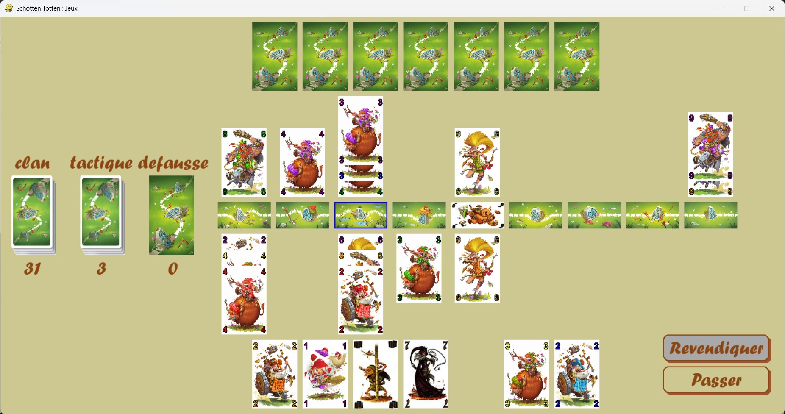
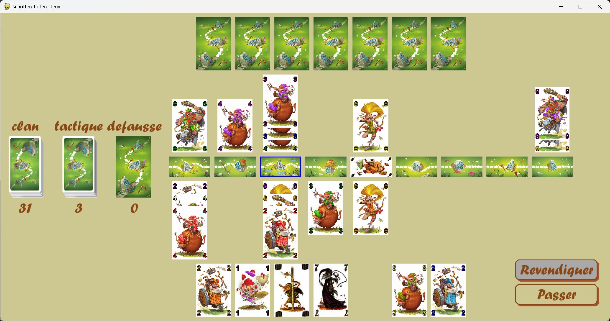
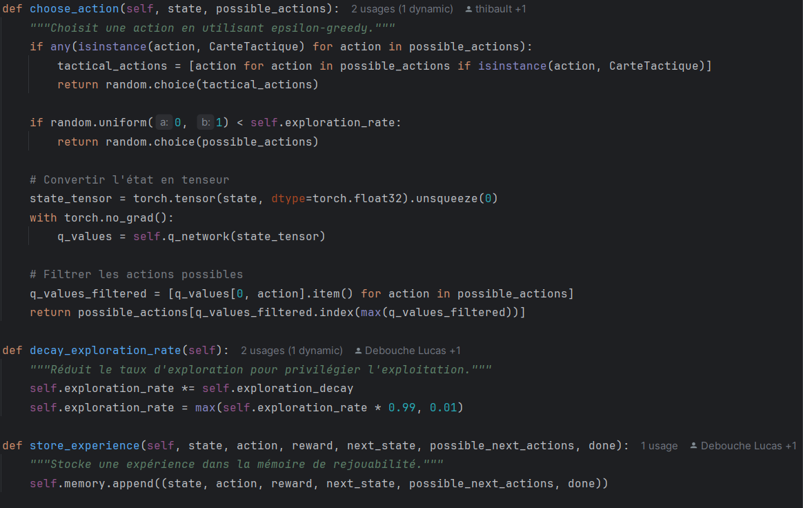
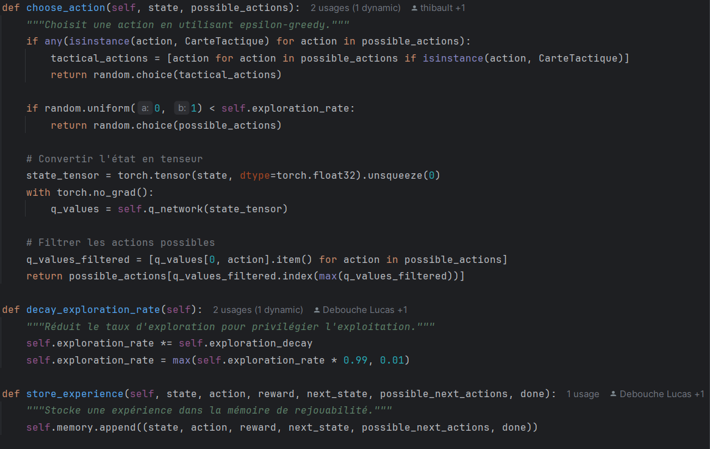

Schotten Totten
Un jeu de cartes stratégique avec IA.
Schotten Totten
Ce projet vise à créer une version numérique d’un jeu de cartes avec une intelligence artificielle capable de rivaliser avec un joueur humain. L’objectif était de modéliser fidèlement les règles, développer une IA stratégique avec Q-Learning et concevoir une interface intuitive avec Pygame pour une expérience fluide. On a rencontré plusieurs défis, comme la gestion du temps et la complexité des algorithmes, mais l’IA progresse en apprenant de ses erreurs. Bien que le jeu soit fonctionnel, il reste des améliorations à apporter, notamment sur l’optimisation des performances et l’affinement des stratégies de l’IA.
 

 

Points à améliorer :
- Implémentation complète des règles du jeu
- Optimisation de l'IA pour les modes tactique et expert
- Simulation des parties pour affiner l’IA
- Réduction du temps de simulation pour accélérer l’apprentissage
- Améliorations graphiques et ergonomiques pour une meilleure immersion